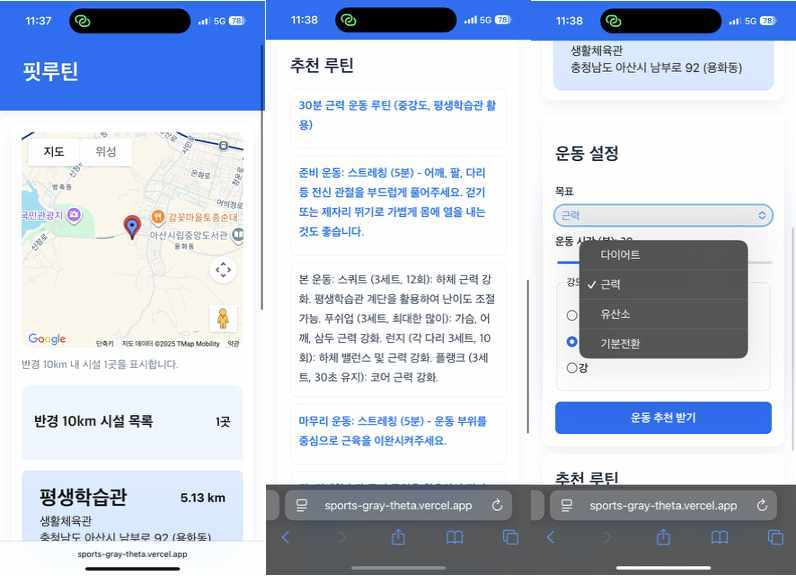

FITROUTINE
운동 장소부터 루틴까지,
하나의 흐름으로.
현재 위치에서 운동 시설을 찾고, 목표·시간·강도를 선택해 맞춤 루틴을 확인하는 과정을 하나의 앱 경험으로 연결했습니다.

시설 탐색에서 루틴 추천까지
운동을 시작하려는 사용자가 현재 위치 주변의 공공체육시설과 목표에 맞는 루틴을 함께 확인할 수 있도록 만든 앱입니다.
검색과 추천을 하나의 흐름으로
사용자는 루틴을 정한 뒤에도 운동할 시설을 따로 검색하고 이동 거리와 프로그램을 비교해야 했습니다. 위치 권한이나 외부 요청이 실패했을 때에도 다음 행동을 안내할 필요가 있었습니다.
지도·입력·결과 화면 구현
지도와 시설 목록을 연결하는 앱 UI, 운동 조건 입력 폼, 추천 결과 화면과 로딩·실패 안내를 구현했습니다. 선택한 시설이 지도와 목록에서 동일하게 표시되도록 상태를 연결했습니다.
선택 상태와 비동기 데이터 연결
- 01
지도와 목록의 선택 상태 동기화
목록에서 시설을 선택하면 지도 중심이 함께 이동하고 선택된 마커가 강조되도록 구현했습니다.
- 02
거리와 조건으로 정보 좁히기
시설 좌표에서 거리를 계산하고 가까운 순으로 정렬했습니다. 목표·운동 시간·강도를 입력해 추천 결과를 받는 흐름을 구성했습니다.
- 03
실패해도 이어지는 경험
위치 권한을 얻지 못하면 기본 위치를 사용합니다. 지도·시설·AI 요청의 상태를 안내하고, JSON 데이터와 CSV 대체 데이터를 사용하도록 구성했습니다.
앱 구현과 경진대회 수상
공공체육시설 탐색, 운동 조건 설정, 맞춤 루틴과 AI 코멘트 확인 화면을 연결했습니다. 기존 제출 자료의 실제 실행 화면으로 구현 결과를 확인할 수 있습니다.
수상 · 2025학년도 순천향대 로컬 창업아이템 경진대회 · 최우수상
기능 사이의 상태를 연결하는 일
기능을 각각 구현하는 것보다 여러 상태를 하나의 경험으로 동기화하는 일이 중요하다는 것을 배웠습니다. 비동기 데이터의 로딩과 실패 안내를 함께 구성해 사용자가 다음 행동을 이해하도록 했습니다.
NeuroCare
Contact
window101906@gmail.com